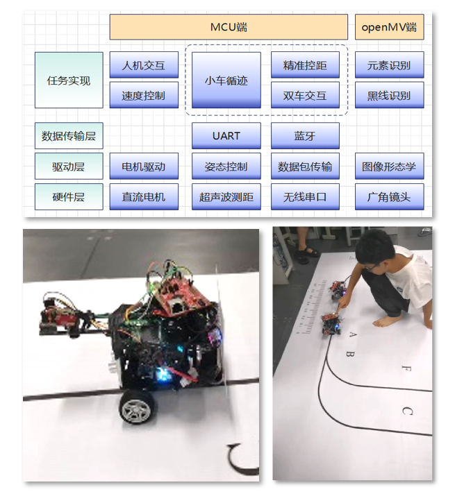

竞赛与嵌入式
电子设计竞赛-双车视觉循迹与协同控制
结合视觉循迹、超声波测距与车间通信，实现双车跟随和协同控制。
省二等奖
技术实践
- 视觉感知： 基于 OpenMV 与 Python/OpenCV 实现赛道图像采集、预处理和特征识别，提取道路特征信息，支持车辆自主循迹；
- 嵌入式开发： 基于 MSP-EXP432 单片机完成主控程序开发，编写超声波测距模块驱动、双车通信及运动控制代码；
- 协同控制： 结合视觉识别与超声波测距信息，实现双车间距检测、通信交互与跟随控制，完成双车协同循迹任务，获省二等奖。
项目图片
